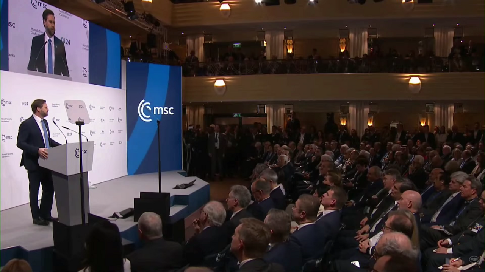
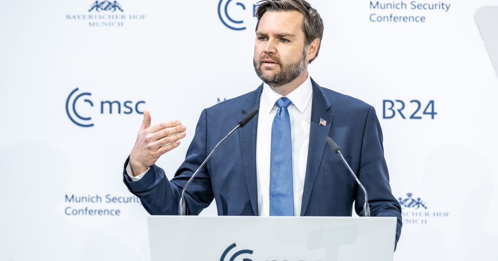
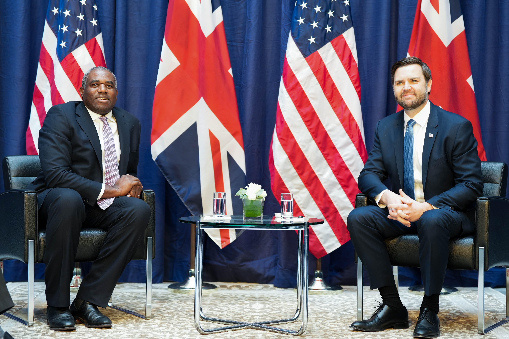
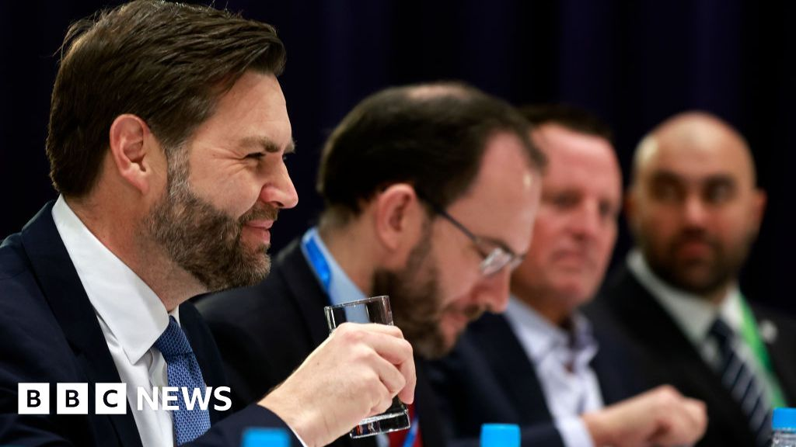

2025 年 2 月 14 日，美国副总统在 Munich 安全会议上发表了一场跨大西洋同盟七十年历史上前所未见的演讲。
2025 年 2 月 14 日，Munich Bayerischer Hof 酒店的宴会大厅里，坐满了欧洲最显赫的政治人物、外交官和安全政策专家。他们中大多数人期待着一场例行的跨大西洋团结演讲——美国新任副总统将确认对Ukraine的支持，重申北约承诺，至少表面上维持七十年的同盟秩序。
J.D. Vance 走上台，开始说了几句话，现场礼貌地安静下来。
然后一切变了。
Vance 几乎没有谈论Ukraine。他只在前言中附带提及一次。他把整个演讲的矛头指向了坐在台下的人——欧洲的领导人、制度、价值观。他逐一提及罗马尼亚的选举取消、英国的沉默祈祷案、瑞典的言论自由审判、德国的极右政党排斥。他告诉在场的欧洲政要，他们自己的政府才是最大的威胁。
据 NPR 记者现场报道，Vance 演讲过程中"欧洲领导人们相当震惊和困惑"。当 Vance 在演讲中间暂停等待掌声时，大厅里出现了一段令人窒息的沉默。没有掌声，没有欢呼——只有一种难以名状的尴尬。这在Munich安全会议的历史上几乎是前所未有的。[注1]

这篇演讲的标题是"美国在世界中的角色"（The U.S. in the World），但它的实际内容是一个完全不同的东西——一份对欧洲文明的诊断书，或者更准确地说，一份起诉书。
（Trump 政府非常关注欧洲安全，相信能在 Russia 和 Ukraine 间达成合理方案——但我最担心的威胁不是 Russia，不是 China，不是任何外部力量。我担心的是来自内部的威胁。欧洲正在从最基本的价值观上撤退。）
（但如果你们的民主可以被一个外国花费几十万美元的数字广告所摧毁，那它一开始就不够强大。）
（如果美国民主能撑过 Greta Thunberg 十年的说教，你们也能撑过 Elon Musk 几个月。）
（如果你们害怕自己的选民，美国也无能为力。同样地，你们也无法为选举了我和 Trump 总统的美国人民做任何事。）
（Washington 来了新的当家人。在 Trump 的领导下，我们可能不同意你们的观点，但我们会捍卫你们在公共广场表达的权利。）
开场不到一分钟，Vance 就抛出了整场演讲的核心命题。这句话的效果是致命的。在场的所有人都知道，自 2022 年以来，Munich安全会议的全部议题都是如何应对俄罗斯的威胁。欧洲各国外交部长、国防部长准备了大量关于Ukraine援助、北约东翼防御、能源安全的联合声明。而 Vance 站在那里说：你们搞错重点了。
更令人不安的是这个判断的结构。它不是简单地批评欧洲对俄政策，而是将批评的框架从"外部威胁"转向"内部腐朽"。在 Vance 的叙事中，真正威胁欧洲的不是莫斯科，而是布鲁塞尔、柏林、London和斯德哥尔摩。
Vance 首先攻击了 2024 年罗马尼亚取消总统选举的事件。罗马尼亚宪法法院在首轮投票后宣布结果无效，理由是俄罗斯通过网络干预影响了选举。一位极右翼候选人 Calin Georgescu 意外领先。
"I was struck that a former European commissioner went on television recently and sounded delighted that the Romanian government had just annulled an entire election. He warned that if things don't go to plan, the very same thing could happen in Germany too."
（「令我震惊的是，一位前欧盟委员最近上了电视，对罗马尼亚政府刚刚取消了一整场选举显得欣喜若狂。他警告说，如果事情不按计划发展，同样的事情也可能在德国发生。」）
"But if your democracy can be destroyed with a few hundred thousand dollars of digital advertising from a foreign country, then it wasn't very strong to begin with."
（「但如果你们的民主可以被一个外国花费几十万美元的数字广告所摧毁，那它一开始就不够强大。」）
这个论断的精妙之处在于，它将欧洲的自我防御机制（取消受干预的选举）翻转为民主脆弱的证据。按照 Vance 的逻辑，真正健康的民主应该能够抵御外部影响，如果不行，那问题出在民主本身，而不是干预者。这一论点同时服务于多个目的：为俄罗斯的干预开脱，为极右候选人辩护，并将批评矛头指向主流建制派。
Vance 的演讲不是泛泛而谈。他逐个国家地列举案例，像一位检察官一样宣读起诉书。
德国：他批评欧盟委员会威胁在"内乱时期"关闭社交媒体，并点名德国警方对"反女权评论"的网络用户进行突击搜查。
瑞典："两周前，瑞典政府判决一名基督教活动家犯有参与焚烧古兰经的罪行——而焚烧行为直接导致了他朋友的谋杀。法官说，瑞典保护言论自由的法律并不——我引用——赋予任何人'免罪通行证'去做或说任何可能冒犯某个群体的事情。"[注2]
英国：Vance 用了最长的篇幅点名英国，这在英美关系的语境中几乎是不可想象的：
"A little over two years ago, the British government charged Adam Smith Conner, a 51-year-old physiotherapist and an Army veteran, with the heinous crime of standing 50 metres from an abortion clinic and silently praying for three minutes, not obstructing anyone, not interacting with anyone, just silently praying on his own."
（「两年多前，英国政府指控51岁的理疗师、陆军退伍军人 Adam Smith Conner 犯下了令人发指的罪行——在一家堕胎诊所50米外站着默默祈祷了三分钟，没有阻挡任何人，没有与任何人交谈，只是独自默默祈祷。」）
"This last October, the Scottish government began distributing letters to citizens whose houses lay within so-called safe access zones, warning them that even private prayer within their own homes may amount to breaking the law. Naturally, the government urged readers to report any fellow citizens suspected guilty of thought crime in Britain and across Europe."
（「去年十月，苏格兰政府开始向居住在所谓『安全出入区』内的公民分发信件，警告他们即使在自己家中进行私人祈祷也可能构成违法。理所当然地，政府还敦促读者举报任何被怀疑犯有思想罪的同胞，无论是在英国还是整个欧洲。」）
"思想犯罪"（thought crime）——这个词汇的选择不是偶然的。Vance 在一篇外交演讲中直接引用了《1984》的概念，将英国的言论自由限制等同于奥威尔式的极权主义。
演讲当天，Munich发生了车辆冲撞人群事件——一名 24 岁的阿富汗寻求庇护者，已是警方已知人物，驾驶汽车冲入人群。Vance 利用这个时间巧合强化了他的移民论点：
"Today, almost one in five people living in this country moved here from abroad. That is, of course, an all time high."
（「如今，这个国家几乎每五个人中就有一个是从国外移居而来的。这当然是历史最高纪录。」）
"No voter on this continent went to the ballot box to open the floodgates to millions of unvetted immigrants."
（「这个大洲上没有一个选民是投了票去为数百万未经审查的移民打开闸门的。」）
这句话是 Vance 演讲中最具煽动力的段落之一。它将欧洲的移民政策定义为对民主意愿的背叛——不是左翼或右翼的分歧，而是"人民"与"精英"的根本对立。这直接呼应了他在 Hillbilly Elegy 中的核心框架：不是系统需要改革，而是文化已经腐烂。
演讲中最广为传播的一句话，不是关于罗马尼亚或英国的政策批评，而是一句看似随意的玩笑：
"If American democracy can survive ten years of Greta Thunberg's scolding you guys can survive a few months of Elon Musk."
（「如果美国民主能在 Greta Thunberg 十年的训斥下存活，你们也能在 Elon Musk 几个月的影响下挺过去。」）
这句话在 Twitter/X 上引发了狂欢。Reddit r/XGramatikInsights 上发布的相关视频获得了 24,117 分和 7,158 条评论，是Munich议题中互动量最高的帖子之一。[注3] 但这句话的意义远超一个"梗"。它同时完成了三件事：
第一，为 Musk 的政治干预辩护。Vance 在第 61 届Munich安全会议的正式演讲中，将 Twitter/X 的平台变化——大规模裁员、算法调整、内容审核放松——与一个 17 岁瑞典环保活动家的"训斥"相提并论。这种等价本身就是一种权力宣言：世界上最富有的人对公共舆论的系统性重塑，与一个青少年的气候运动，被放在了同一个天平上。
第二，嘲笑欧洲。在 Vance 的叙事中，欧洲政客害怕一个青少年的批评却不担心科技寡头的系统性影响——这本身就是文明衰败的证据。
第三，为更大的议程铺路。当一家社交媒体平台可以被用来不受约束地传播任何内容时，谁受益？是那些拥有最多资源和最激进议程的行为者——包括极右政党、外国干预者和国内的民粹主义运动。
这与我们在第四章中分析的硅谷网络直接对应：Thiel 和 Musk 都在推动一个不受监管的信息生态系统，Vance 在Munich的演讲是这个议程的外交表达。不受监管的 AI 市场 + 不受审查的社交媒体 = 更大的商业空间和更强的政治影响力。

Vance 在演讲中给出的最直接的警告是：
"If you're running in fear of your own voters, there is nothing America can do for you. Nor for that matter, is there anything that you can do for the American people who elected me and elected President Trump. You need democratic mandates to accomplish anything of value in the coming years."
（「如果你们害怕自己的选民，美国无能为你们做任何事。同理，你们也无法为选举我和 Trump 总统的美国人民做任何事。你们需要民主授权才能在未来几年完成任何有价值的事情。」）
这句话的含义是多层级的。表面层级：欧洲领导人应该尊重民主。深层含义：如果你们不尊重选民的"真实意愿"（被 Vance 定义为民粹主义和反移民立场），美国将不再与你们合作。更深一层：这是在告诉欧洲的极右政党，Washington站在你们这边。
演讲的最激进部分，是对Munich安全会议本身的攻击：
"The organisers of this very conference have banned lawmakers representing populist parties on both the left and the right from participating in these conversations."
（「本届会议的组织者禁止了代表左翼和右翼民粹主义政党的议员参与这些讨论。」）
"It looks more and more like old entrenched interests hiding behind ugly Soviet-era words like misinformation and disinformation, who simply don't like the idea that somebody with an alternative viewpoint might express a different opinion or, God forbid, vote a different way, or even worse, win an election."
（「这看起来越来越像是根深蒂固的既得利益集团躲在『虚假信息』和『不实信息』这类丑陋的苏联时代词汇背后，他们只是不喜欢持有不同观点的人可能表达不同意见，或者——老天不容——以不同方式投票，甚至更糟的——赢得选举。」）
这是一个历史性的时刻：美国副总统在Munich安全会议上，用"苏联时代词汇"来描述欧洲的言论自由保护措施。将"虚假信息"这个概念——最初是为了描述俄罗斯的网络战争手段——反转为欧洲建制派打压异见的工具。
演讲的收尾是这样的：
"In Washington, there is a new sheriff in town. And under Donald Trump's leadership, we may disagree with your views, but we will fight to defend your right to offer them in the public square."
（「在华盛顿，来了一个新警长。在 Donald Trump 的领导下，我们可能不同意你们的观点，但我们会为捍卫你们在公共广场上表达这些观点的权利而战。」）
引用约翰保罗二世——一位在共产主义东欧发表著名演讲的教皇——不是巧合。Vance 在暗示欧洲正在经历一种"新冷战"的翻转：这一次，"铁幕"不是莫斯科竖起的，而是布鲁塞尔竖起的，而美国是站在自由这边。
"As Pope John Paul II once said, 'do not be afraid'. We shouldn't be afraid of our people even when they express views that disagree with their leadership."
（「正如教皇约翰·保罗二世曾经说过的，『不要害怕』。即使我们的人民表达了与领导层不同的观点，我们也不应该害怕他们。」）
演讲结束后，Bayerischer Hof 酒店的大厅里弥漫着一种奇怪的气氛。据多位在场记者描述，许多欧洲外交官的反应不是愤怒，而是一种不真实感——仿佛他们刚刚目睹了一场他们无法理解的仪式。
这不是修辞。一位欧洲高级外交官后来对 BBC 表示，Vance 的演讲"感觉像是对盟友的攻击，而不是盟友之间的对话"。[注4]

德国总理 Olaf Scholz 在第二天——2 月 15 日——发表了直接回应。他提到了 Vance 刚刚参观过的达豪集中营：
"Never again fascism, never again racism, never again aggressive war. That is why an overwhelming majority in our country opposes anyone who glorifies or justifies criminal National Socialism."
（「绝不让法西斯主义重演，绝不让种族主义重演，绝不让侵略战争重演。这就是为什么我国压倒多数的人反对任何美化或为犯罪的国家社会主义辩护的人。」）
"That is not appropriate, especially not among friends and allies. We firmly reject that."
（「这不合适，尤其不应发生在朋友和盟友之间。我们坚决拒绝。」）
当被问及 Vance 的演讲是否有值得反思之处时，Scholz 冷幽默地回应：
"You mean all these very relevant discussions about Ukraine and security in Europe?"
（「你是说关于乌克兰和欧洲安全的那些非常有意义的讨论？」）
全场爆发出笑声和掌声。Scholz 用一句话解构了 Vance 整场演讲的前提：你来到这里不谈Ukraine和欧洲安全，你有什么资格告诉我们要反思？
德国总统 Frank-Walter Steinmeier 的回应更加系统化：
"It is a worldview that shows no regard for established rules or for partnerships and trust that have grown over a long time."
（「这是一种对既定规则、以及对长期建立起来的伙伴关系和信任毫不尊重的世界观。」）
"The absence of rules must not be the guiding principle of a new world order."
（「规则的缺失绝不能成为新世界秩序的指导原则。」）
"Democracy is not a business model."
（「民主不是一种商业模式。」）
最后那句话尤其值得注意。"Democracy is not a business model"——Steinmeier 的目标不只是 Vance，而是 Vance 背后的整个网络。Peter Thiel、Elon Musk、Marc Andreessen 这些人本质上是用商业思维理解治理问题的：效率优于程序，结果优于过程，"破坏"优于"改良"。Steinmeier 在说：民主不是你们可以在硅谷重新设计的应用程序。
在所有欧洲反应中，最具讽刺意味的是来自莫斯科的。俄罗斯国家电视台 Rossiya 1 频道的记者 Asya Emelyanova 这样评价 Vance 的演讲：
"这是一次公开的鞭笞，我只能这样形容。"
当一位美国副总统的演讲被俄罗斯国家电视台描述为"鞭笞"欧洲时——"鞭笞"的对象是美国的盟友——这个画面的地缘政治含义已经不需要任何评论了。
值得注意的是，《华尔街日报》给出了这样的评价：
"Vice President JD Vance's Friday speech at the Munich Security Conference was the most significant American address in Germany since 1987."
（「美国副总统 J.D. Vance 周五在慕尼黑安全会议上的演讲，是自1987年以来在美国在德国发表的最具分量的讲话。」）
1987 年，里根总统在柏林勃兰登堡门前发表"推倒这堵墙"的演讲。三十八年后，《华尔街日报》将 Vance 的Munich演讲与里根的柏林演讲相提并论——但方向完全相反。里根在向世界展示美国的领导力，Vance 在向盟友展示美国的不耐烦。
Vance 的Munich演讲发生在 2025 年 2 月 14 日。但在整整一年后——2026 年 2 月——一个完全不同的事件让"Munich"和"Vance"再次成为社交媒体上的爆炸性组合。
AOC——New York州众议员 Alexandria Ocasio-Cortez——也出席了 2026 年的Munich安全会议。在一次讨论中，她被问及台湾政策，给出了一个后来在社交媒体上被称为"冻住 20 秒"的回答：
"You know... I think that uh... this is such a, uh... you know, I, I think that this is a um... this is of course, a, a very long-standing policy um..."
（「你知道……我觉得，呃……这是一个，呃……你知道，我、我觉得这是一个，嗯……这当然是，一个、一个长期的政策，嗯……」）
这段视频在社交媒体上迅速传播。Twitter/X 上，@CollinRugg 发布了 AOC 的尴尬回答片段，获得了 3,672 次点赞和 426 次转发。[注7] 更有影响力的传播来自 Vance 本人。
2026 年 2 月 19 日，在一次公开活动中，Vance 看着镜头，故意停顿了很长时间，然后说：
"I didn't want to repeat our Congresswoman who froze for 20 seconds in Munich. Now, I'm tempted just to freeze for 20 seconds and just stare at the cameras. Maybe [the media will] say nice things about me like they do about Congresswoman Cortez."
（「我不想重复我们那位女议员在慕尼黑冻住20秒的表演。现在，我也想干脆冻住20秒，就盯着摄像机看。也许（媒体）会像对待科特兹女议员那样对我说好话。」）
这段视频在 @CharlieK_news 的账号上获得了 17,266 次点赞和 863,017 次观看，是Munich相关推特中互动量最高的单条。[注8]
但事件的讽刺之处在于：Reddit 上 r/UnderReportedNews 子版块发布了一条帖子，指出当 Vance 在Munich演讲中开 AOC 玩笑时，台下也无人笑——场面同样尴尬。这条帖子获得了 3,325 分和 277 条评论。[注9]
AOC 后来反击，说了一句在社交媒体上广泛传播的反讽：
"唯一比我停顿更长的，是他们对他的冷场。"
AOC Munich事件的核心不是一个人的口误。它是 Vance 政治风格的一个完美标本：利用对手的弱点进行精准的、病毒式的攻击，将严肃的外交政策议题转化为社交媒体上的娱乐内容。在台湾政策被转化为一个 20 秒的"冻住"笑料的过程中，真正的问题——台海安全、中美关系、全球稳定——被完全淹没了。
更深层的问题是：Vance 将 AOC 在Munich的表现作为武器，但他在 2025 年Munich自己面对的沉默同样尴尬。这种不对称——对自己不提、对对手放大——是现代政治传播的一个标志性特征。
Vance 在Munich演讲中最具实际影响的行为，发生在演讲台之外。
2025 年 2 月 14 日，在发表演讲的同一天，Vance 私下会见了德国 AfD（德国选择党）领导人 Alice Weidel，会面持续约 30 分钟。[注10] 同时，他拒绝了与当时的德国总理 Olaf Scholz 的会面。[注10]
这打破了美国政要与德国执政党交往的惯例。自二战以来，美国高级官员在访问德国时，通常会优先与现任政府会面——这是最基本的同盟礼仪。Vance 反其道而行之。
AfD 在当时尚未被正式认定为"极右翼极端政党"——但时间很快给出了"打脸"。Reddit 上 r/agedlikemilk 子版块的一条帖子以 6,736 分的高分记录了这个时间线：Vance 和 Musk 公开赞助的 AfD，随后被正式认定为极右翼极端政党。帖子的标题暗示了一个简单但有力的叙事——你们站台的人，被定性了。[注11]
要理解Munich演讲的真正含义，必须将它与三天前发生在Paris的事情放在一起看。
2025 年 2 月 11 日，Paris AI 行动峰会。这是 Vance 就任副总统后的首次外交出访。在法国总统马克龙和印度总理莫迪联合主办的大会上，Vance 发表了一篇同样具有颠覆性的演讲。[注12]
"I'm not here this morning to talk about AI safety, which was the title of the conference a couple of years ago. I'm here to talk about AI opportunity."
（「我今天早上不是来谈论 AI 安全的——那是几年前这次会议的主题。我是来谈论 AI 的机遇的。」）
"We believe that excessive regulation of the AI sector could kill a transformative industry just as it's taking off."
（「我们认为，对 AI 行业的过度监管可能会在它刚刚起飞之际扼杀一个变革性的产业。」）
"It is one thing to prevent a predator from preying on a child on the Internet, and it is something quite different to prevent a grown man or woman from accessing an opinion that the government thinks is misinformation."
（「防止一个掠夺者在互联网上侵害儿童是一回事，而阻止一个成年男女获取政府认为是虚假信息的观点，则完全是另一回事。」）
峰会结束时，约 60 个国家签署了"可信 AI 誓言"，概述了六项 AI 发展原则——包括促进可及性、确保伦理与安全、避免市场垄断等。美国和英国拒绝签署。[注12]
三天后，Munich。Vance 在Paris拒绝签署 AI 监管共识，三天后在Munich拒绝签署欧洲安全共识。这不是两个独立的外交事件，而是同一个议程的两个面向。
在Paris，Vance 说的是：不要监管 AI，让市场自由发展。在Munich，Vance 说的是：不要监管言论，让信息自由流动。两者的逻辑完全一致：减少规则，减少约束，让最强的力量——无论是科技公司还是极右政党——自由竞争。
这个逻辑直接服务于我们在第四章中分析的硅谷网络：
Thiel：需要不受监管的 AI 市场来扩展 Palantir 和其他投资
Musk：需要不受审查的社交媒体来维持 X 的商业价值和政治影响力
Sacks：作为"AI 沙皇"，需要为硅谷的 AI 公司消除监管障碍
Andreessen：需要开放的市场来推动加密货币和 Web3 项目
Vance 在Paris和Munich的演讲，实际上是在为这些利益进行外交层面的"清障"。
如果说 Vance 在Munich演讲中警告欧洲正在压制言论自由，那么一年后发生的一件事几乎是为他的论点提供了"注脚"——尽管可能不是他想要的那种。
2026 年 3 月，比利时新闻伦理委员会（CDJ）对新闻媒体 21News 进行制裁，理由是该机构发表了 Vance 2025 年Munich演讲的全文，但没有附带"经过批准的评论"。[注13]
"NEWS OUTLET SANCTIONED FOR PUBLISHING VP VANCE'S ANTI-CENSORSHIP SPEECH. JD Vance's 2025 Munich speech warned that Europe's biggest threat was its own crackdown on free speech. Then a Belgian press ethics body sanctioned 21News for publishing the full transcript without the approved lecture attached."
（「新闻机构因发表副总统万斯的反审查演讲而遭制裁。J.D. Vance 的2025年慕尼黑演讲警告欧洲最大的威胁是其自身对言论自由的打压。随后，比利时新闻伦理机构制裁了 21News，原因是其发表了完整演讲文稿但未附上经过批准的评论。」）
这个事件的讽刺性是完美的。Vance 在Munich说欧洲在压制言论自由；一年后，一家媒体因为他这篇关于言论自由的演讲而被制裁。无论你对 Vance 的观点持何种立场，这个时间线本身就是一个强有力的叙事。
2026 年 2 月，第 62 届Munich安全会议如期举行。Vance 没有出席——这一次是美国国务卿 Marco Rubio 代表Washington。
Twitter/X 上，记者 Katherine Forster (@forster_k) 发布了一张引人注目的照片：Vance 的肖像在 2026 年Munich会议的展示区里，被一棵植物遮挡了一部分。[注14]
"JD Vance's picture part hidden behind a plant at the Munich Security Conference, after he upset leaders here last year. Expect Marco Rubio's photo will get a better spot after yesterday's speech. Huge relief here, though beneath the charm some of the message was pretty similar..."
"在魅力之下，信息 pretty similar"——这句话捕捉到了一个关键现实。Rubio 用了更加温和的措辞，但核心立场与 Vance 一年前在Munich表达的并无本质区别。Vance 扮演了"坏警察"的角色，为 Rubio 的"好警察"外交铺平了道路。
Trump 本人在评论 Rubio 的Munich演讲时，也不经意地证实了这一点：
"Marco does it with a velvet glove, but it's a kill... The result is the same. [Marco and JD Vance] do it very differently."
回到那个核心问题：Vance 的Munich演讲到底是什么？
它不是一篇传统的外交政策声明。传统的美国外交演讲——无论是肯尼迪的"我是柏林人"、里根的"推倒这堵墙"、还是奥巴马的"布拉格之春"——都是在向盟友展示美国的承诺和领导力。Vance 的演讲反其道而行之，他向盟友展示了美国的不耐烦、不尊重，以及对"后特朗普时代"国际秩序的根本不认同。
它也不是一篇简单的"反欧洲"演讲。如果 Vance 仅仅是讨厌欧洲，他不需要如此系统地、逐个国家地构建论点。他的演讲有一个更宏大的框架——我们在前几章中反复看到的框架。
Hillbilly Elegy 的国际版。在第一章中，我们分析了 Vance 对铁锈带的诊断："文化问题而非结构问题"。在Munich，他将同样的框架应用到了整个欧洲文明：不是外部威胁在摧毁你们，是你们内部的腐烂——移民政策、言论自由限制、对极右政党的排斥——在自我毁灭。
"习得性无助"的文明诊断。第二章中，我们将 Vance 对美国社会的"习得性无助"诊断追溯到了他的耶鲁法学院经历和 Rene Girard 的模仿欲望理论。在Munich，"习得性无助"变成了"文明的衰败"——欧洲已经丧失了自信，丧失了对自己人民的信任，丧失了维护自身价值观的能力。
硅谷网络的文明论。第四章中，我们看到 Thiel、Musk、Sacks 和 Andreessen 如何将 Vance 设计为一个"项目"。Munich演讲是这个项目在国际舞台上的首次公开展示。Vance 为 Musk 辩护（Greta vs Musk），为不受监管的 AI 铺路（三天前的Paris演讲），为极右政党的合法化站台（会见 AfD、批评排除 populist parties）——这些都是硅谷网络的核心议程。
Curtis Yarvin 的影子。Yarvin 的核心思想——企业治理替代民主——在Munich演讲中以一种微妙的编码方式出现了。当 Vance 说"If you're running in fear of your own voters"，他实际上是在说：选民的真实意愿与建制派的意愿之间存在鸿沟，而前者应该优先。这正是 Yarvin 所说的"民主的不充分性"——只不过被包装成了"民主的捍卫"。
这篇演讲是"后特朗普时代保守主义"的宣言——一种将反全球化、反移民、反监管、反政治正确、亲科技寡头、亲民粹主义整合在一起的意识形态体系。它的核心主张是：自由不是通过规则和制度保障的，而是通过消除规则和制度来实现的。
这是一种危险的、具有煽动力的、在社交媒体时代极具传播力的意识形态。而 Vance 是它最出色的代言人。
下一章，我们将追踪这个意识形态在现实世界中面临的第一次重大考验——伊朗。当"反 forever wars"的副总统发现自己在战时内阁中的角色时，"文明论"将如何与地缘政治现实碰撞？